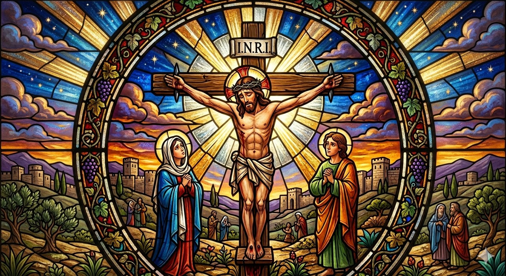
Featured
Why Catholic?
A 7-day journey through the proof of Christ — the historical, scientific, and personal evidence for the faith.
Step 1 of 3
Your Journey
Where are you right now?
No right answer. Just helps us show you what matters most.
Step 2 of 3
Your Questions
What's most on your mind?
Pick the one that feels closest to where you are today.
Step 3 of 3
Your Time
How much time do you have?
We'll show you the right length sessions for your day.
✝
Your path is ready.
Based on where you are, here's where we suggest you begin.
Start Here
Also For You
Today
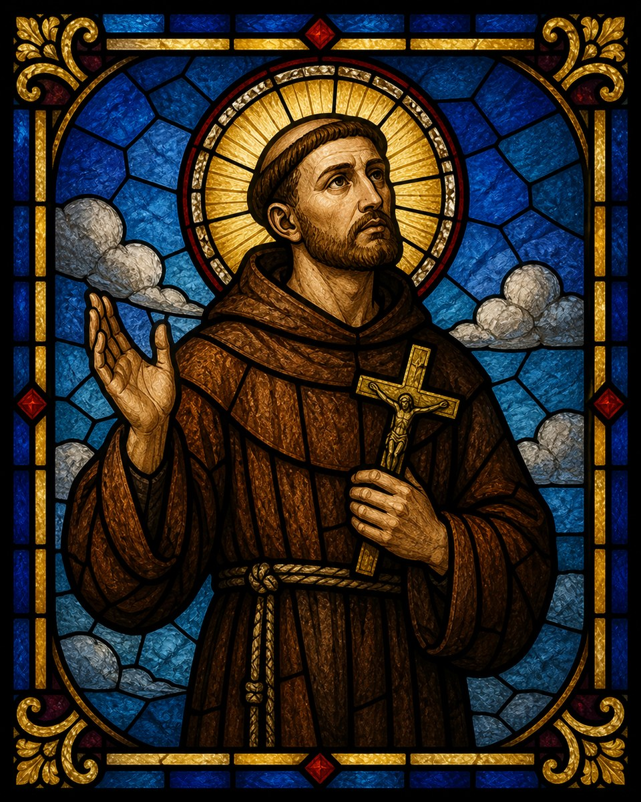
Saint of the Day
Mass Readings
Morning Offering
Prayer Starter
Why Catholic?
Proof, history, and the case for the faith
Did Jesus Really Live?
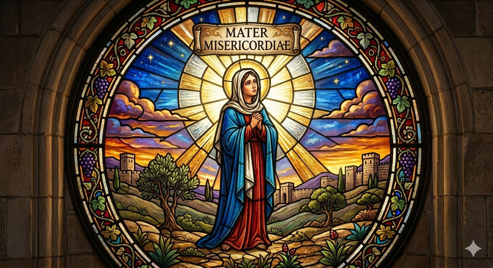
Mary's Apparitions
The Ten Commandments
Why Jesus?
The Prophets
Miracles
Documented, investigated, undeniable
Eucharistic Miracles
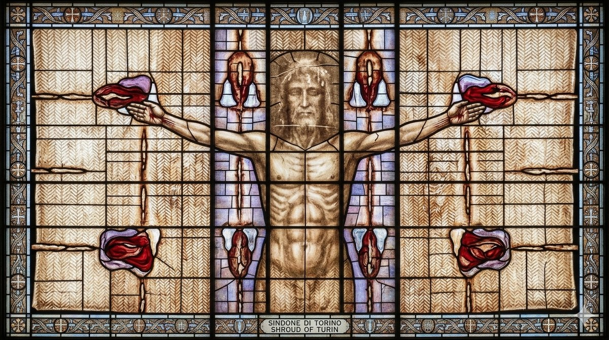
Shroud of Turin
Miracle of the Sun
Incorrupt Saints
Healings at Lourdes
Angels
Guardians, archangels, and the unseen world
Your Guardian Angel
The Archangels
Angel of God
The Rosary & Mary
Pray with the Mother of God
Joyful Mysteries
Sorrowful Mysteries
Glorious Mysteries
Luminous Mysteries
The Hail Mary
Saints
Lives that changed the world
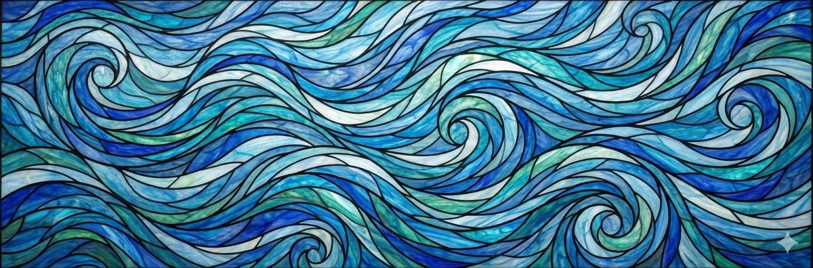
St. Joseph
St. Thérèse of Lisieux
St. Padre Pio
St. Faustina
St. Monica
St. Mary Magdalene
St. Francis of Assisi
St. Augustine
St. Thomas Aquinas
St. Anthony of Padua
St. Teresa of Calcutta
St. Bernadette
St. Joan of Arc
St. John Paul II
St. Michael the Archangel
St. Peter the Apostle
St. Paul the Apostle
St. Maximilian Kolbe
St. Rita of Cascia
St. Gianna Molla
St. Ignatius of Loyola
St. Teresa of Ávila
St. Catherine of Siena
Full Saints Library
Audio Prayers
Pray with your ears
Morning Offering
The Angelus
Divine Mercy Chaplet
Evening Examen
Sleep & Night Prayer
End the day in peace
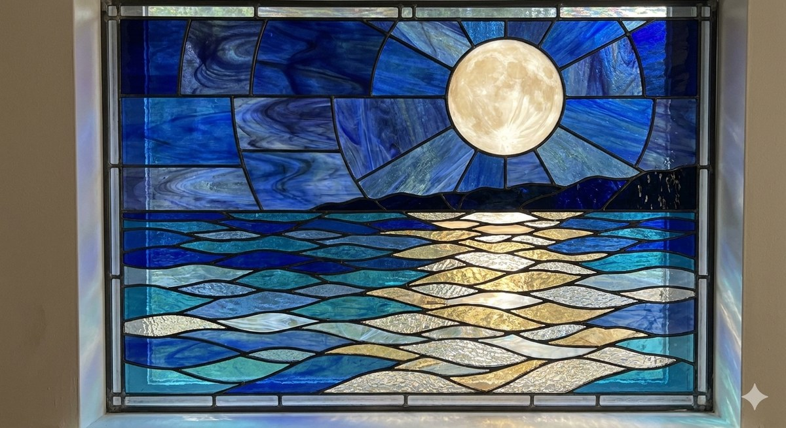
Night Prayer
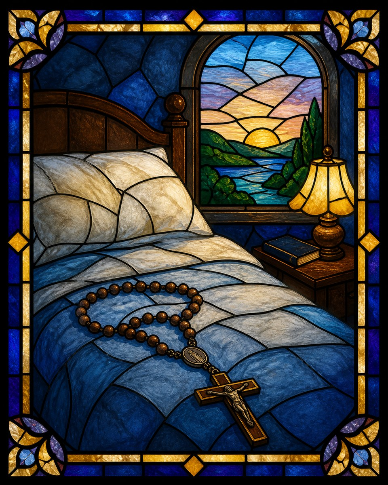
Sleep Rosary
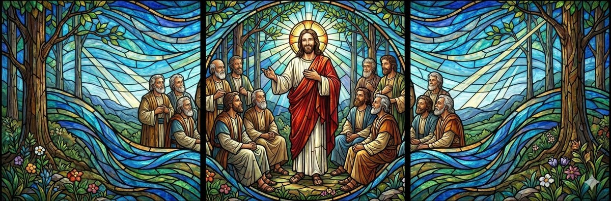
Psalm 91
Devotions
Walk with Christ through the year

Stations of the Cross
Mary & Her Appearances
Healing & Love
A Daily Rhythm
The Church
How it works, who leads it
The Pope
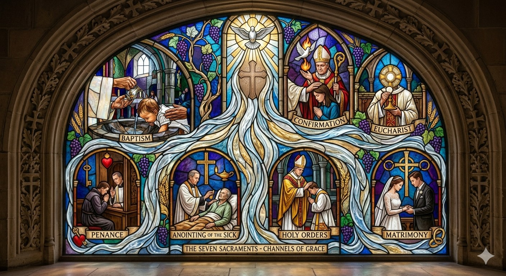
The Seven Sacraments
Catholic Baptism
The Eucharist
Scripture
The Word of God
The Prophets
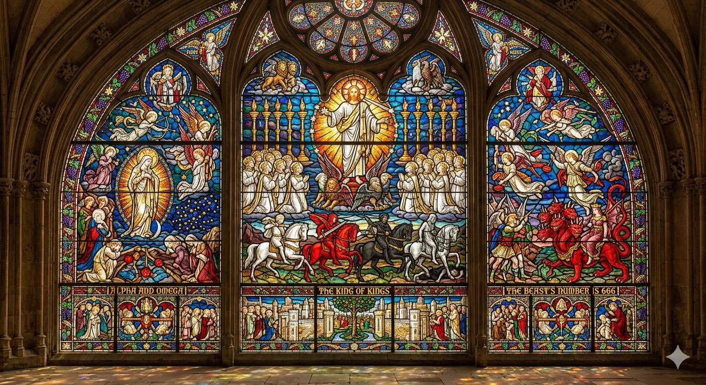
Book of Revelation
Why Jesus?
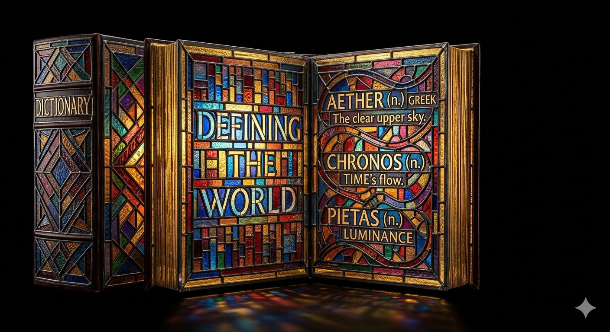
Catholic Dictionary
"You have made us for Yourself, O Lord, and our heart is restless until it rests in You."
St. Augustine
Pray
Your daily rhythm of prayer
Today's Prayers
Tap each one as you pray it · resets daily
0/8
- Morning Offering
- Guardian Angel Prayer
- Gospel Reading
- Angelus at Noon
- Divine Mercy at 3 PM
- The Rosary
- Examination of Conscience
- Night Prayer
A Catholic Daily Rhythm
A complete prayer day · ~45–60 min
A Catholic Daily Rhythm
Audio Prayers
Listen along · pray with your ears
Morning Offering
The Angelus
The Rosary
Divine Mercy Chaplet
Evening Examen
Night Prayer (Compline)
Learn
Why Catholic — and why it's true
Start Here
Why Catholic?
7 days of evidence — historical, scientific, philosophical.
Why Jesus?
The case for Christ — reason & evidence
Did Jesus Really Live?
Mary's Apparitions
Ten Commandments
Scripture
The Word of God
The Prophets
Book of Revelation
Catechism
Sacraments
The seven channels of grace
Eucharist
Baptism
Confession
Confirmation
Miracles
Documented, investigated, verified
"Miracles do not happen in contradiction to nature, but only in contradiction to that which is known to us of nature."
St. Augustine
Eucharistic Miracles
When the Host became flesh
Lanciano, Italy (8th century)
Buenos Aires (1996)
Sokółka, Poland (2008)
Marian Apparitions
When Heaven visited Earth
Fatima, Portugal
Lourdes, France
Guadalupe, Mexico
Saintly Miracles
Stigmata, incorruption, bilocation
Padre Pio's Stigmata
Incorrupt Saints
Shroud of Turin
More miracles coming
This collection is being expanded. Each miracle will include the historical record, scientific investigation, and Church verification.
Me
Settings & preferences
Theme
My Prayer Journal
Prosperity Scriptures
About BeCath
A Daily Rhythm
Catholic Dictionary
How Saints Are Made
Notifications
Why Catholic?
Loading…